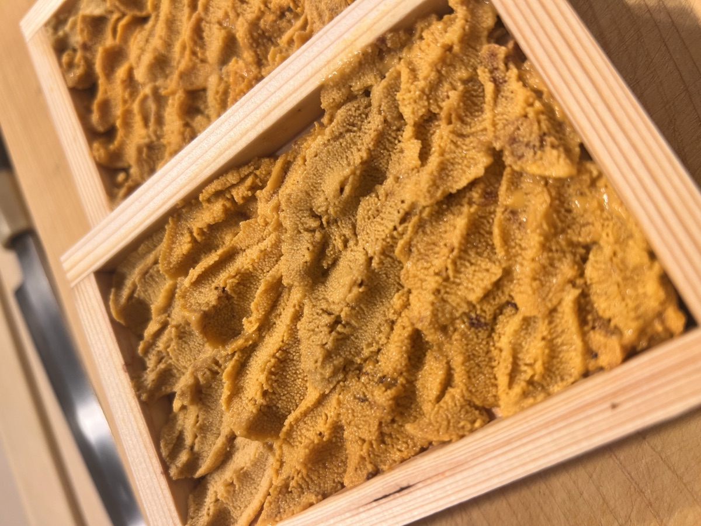
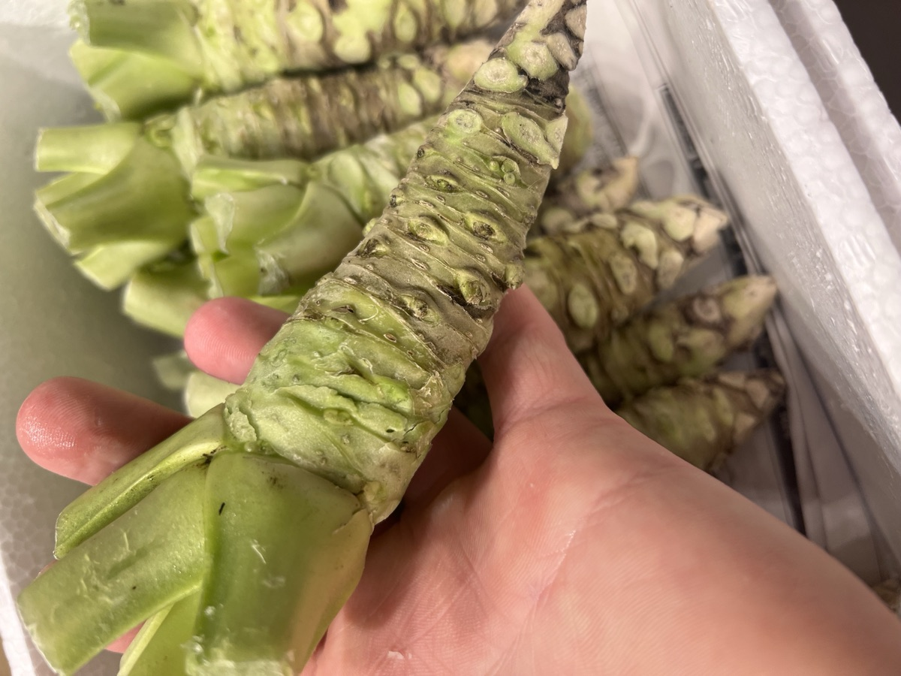
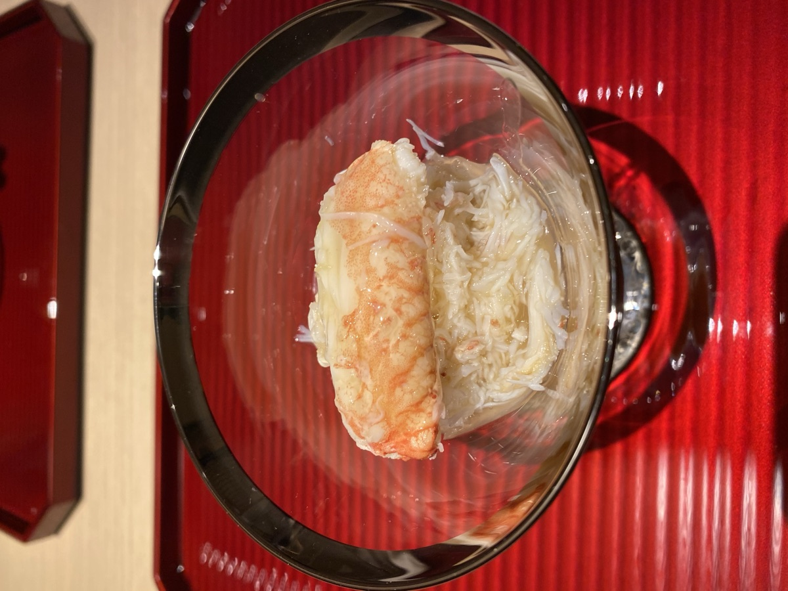
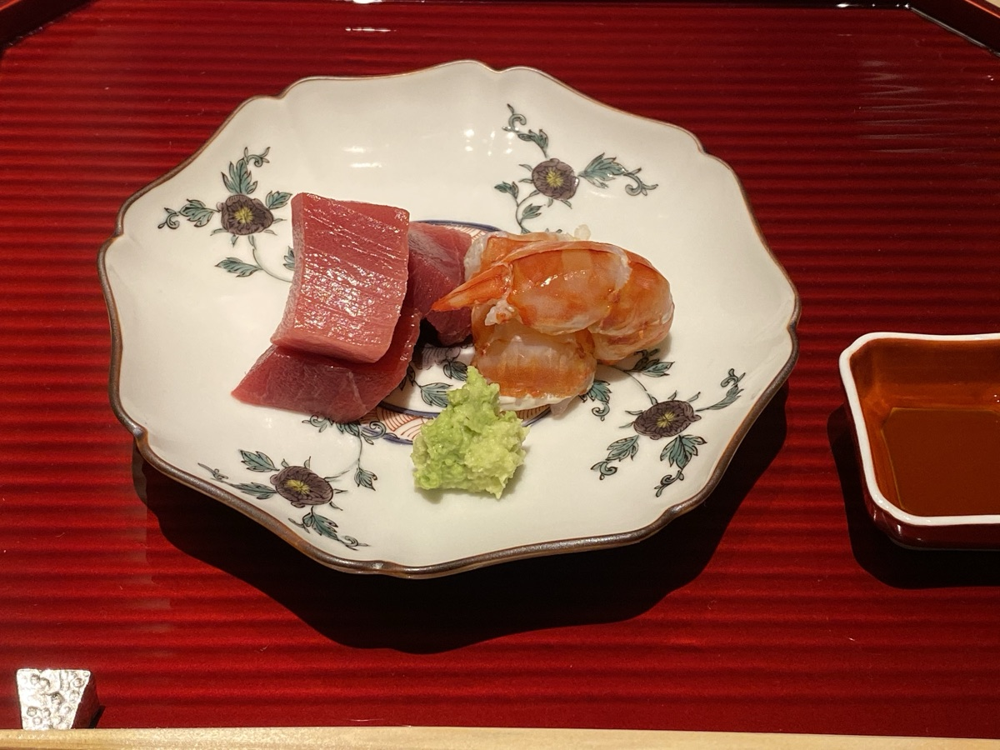
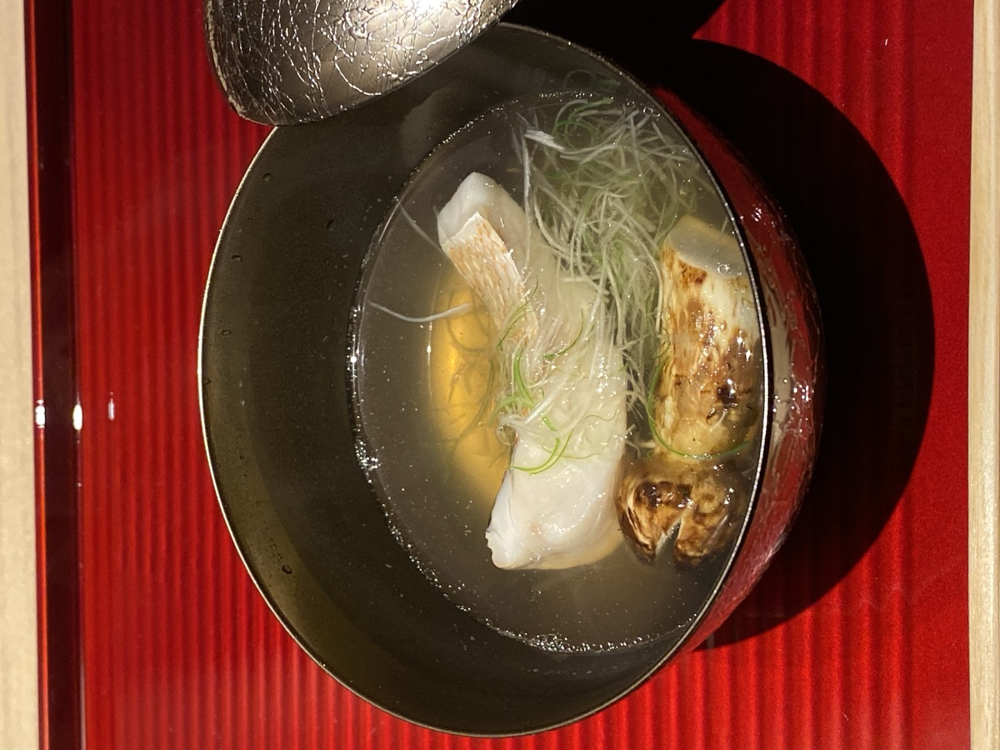
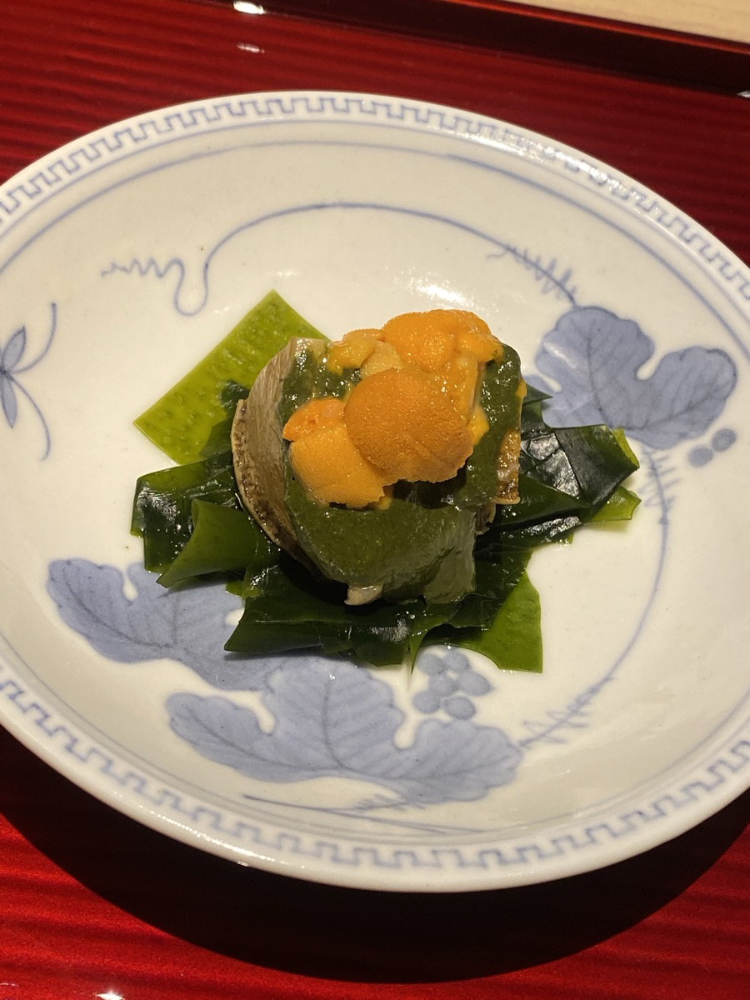

日々の仕入れ、旬の料理、季節のうつろいを発信しています。
オープン日が決まりました！2026年7月24日（金）オープン予定です。
店舗工事を開始いたしました。オープンまで今しばらくお待ちください。
公式LINEを開設いたしました。友だち追加はこちらから。
ホームページを開設いたしました
全国各地より届く旬の魚介。
そして糸島の豊かな風土が育てた野菜や食材。
その時季に最も良い素材を見極め、
一つひとつ丁寧に仕立てています。
福岡・糸島で唯一の江戸前寿司として、創作和食の技も交えながら、季節の移ろいを一皿ごとに表現します。
赤酢のシャリ、丁寧に仕込む酒肴、そして握りへと続く流れ。
料理と空間、会話までも含めて、その日だけの時間をお愉しみください。
カウンター8席。職人の所作を間近に感じながら味わう空間と、
ゆったりと過ごせる個室をご用意しております。
福岡県糸島市での接待や記念日、大切な方とのお食事にも、静かなひとときをお過ごしください。


店主・職人
知久 陵
Ryo Chiku
ミシュランガイド星獲得店での修業を経て、東京・恵比寿の寿司割烹で8年間、江戸前寿司の職人として腕を磨く。飲食業10年以上の経験で培った技と感性を、地元・福岡糸島の豊かな食材に込める。東京の高級店（客単価約2万円）で体得した江戸前の技法を、糸島産の食材とともに丁寧に仕立てる。
12時一斉スタート。仕入れにより内容が変わります。前日までのご予約をお願いします。
※ 仕入れにより内容が変わります
その日の仕入れにより内容が変わります。
※ 仕入れにより内容が変わります
※ 仕入れにより内容が変わります
※ 仕入れにより内容が変わります




お気軽にご相談ください。ご要望・人数・ご予算に応じて、
特別なコースをご用意いたします。
アレルギーのある方は事前にお知らせください。
ドリンクは別途。
お子様向けメニューはご相談ください。
お電話またはオンラインにてご予約ください。